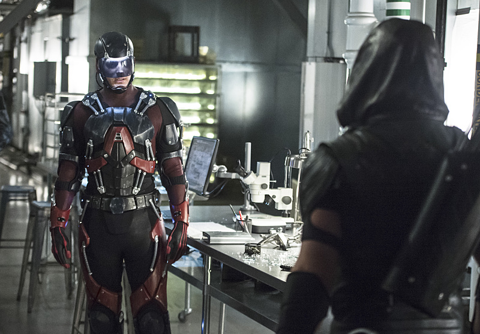

Arrow S04|E06 Lost Souls
I will say that after so many weeks where it seemed like Felicity’s shenanigans with Curtis were completely divorced from the problems Ollie and the rest of team Arrow were dealing with, it was nice to see the two halves brought back together. The hunt for Ray took center stage this week. And it even led to some solid romantic tension between Felicity and Ollie. These two have been much been presented as the perfect couple all season long, apart from those instances where Felicity made it clear she was getting bored with her quiet domestic bliss. This week we saw that the two still have some genuine issues to work through before they can truly settle down.
That romantic tension was played both for laughs and dead seriously at different points. I loved the early scene where the two were bickering back and forth across the table and Diggle found himself trapped in the middle. Diggle has been fairly glum this season, first wrestling with his latent anger at Ollie and then the revelations about his brother. It was nice to see him take on a more comedic role this week. It was also great to see the classic Ollie/Diggle friendship return as the duo shared a drink and commiserated over the weird, stressful nature of being a costumed vigilante with girl problems.
The dramatic elements worked equally well. Early on Felicity seemed a little overly hostile toward Ollie. I was worried the writers might even try to resurrect the Ollie/Felicity/Ray love triangle now that the latter character is back in play. But everything fell into place when Felicity revealed that her emotional turmoil mainly stemmed from guilt. She blames herself for dooming Ray to his tiny existence because she was too busy travelling the world with Ollie to detect Ray’s distress calls. That made her position a lot more understandable. In the end, Felicity and Oliver worked through some baggage, had some strong scenes together and seem to have come out the other side as a stronger couple.
I enjoyed Donna’s return a lot more than I was expecting given that the last thing the show needed this week was another subplot. It was fun to see her awkwardly worm her way back into Felicity’s life. Their heart-to-heart late in the episode was a nice balance to all the Donna-related humor. I’m curious to see if the Donna/Quentin relationship will extend beyond this episode. I can just imagine the two characters driving each other crazy after about a week.

both Sara and Ray departed the show in a very unceremonious way. In both cases, it was pretty much, “Hi, I’m back. Okay, see you later.” Why spend so much time bringing these characters back into play if they’re just going to vanish immediately after with little net change to the status quo? The answer, of course, is that the show is setting up Legends of Tomorrow. Not for the first time, I worry that both Arrow and The Flash are devoting too much energy to setting up that spinoff at the expense of their own storylines. Though at the very least, we know Sara will be appearing in the upcoming Arrow/Flash crossover, so this won’t be the last time we see her prior to Legends of Tomorrow.
At least “Lost Souls” didn’t entirely ignore Arrow’s ongoing conflicts. Damien Darhk was very much a focus this week. We even got a brief rematch between Ollie and his supernatural opponent. Compared to last night’s brutal Flash/Zoom showdown, the Green Arrow/Dahrk fight was a little underwhelming, but it did at least highlight how poorly equipped Team Arrow are to deal with H.I.V.E. The shootout scene between Darhk’s soldiers and Team Arrow stood out more. Ignoring that bizarre “Let’s hide behind this bulletproof couch!” segment, it was pretty cool seeing the three ladies clubbing their enemies in a synchronized display of costumed might.
As for the flashbacks, that material is back to moving at a snail’s pace following John Constantine’s brief trip to the island. It was nice to see Baron Reiter in the flesh again and alluding to some of the mystical tomfoolery afoot on the island. But there was little real sense of progress to the flashbacks this week. How can there be when some scenes are short enough that you can literally blink and miss them?
Next weeks episode preview: